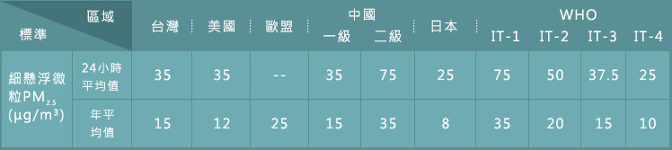

國外PM2.5相關法規
- 美國於1970年制定首部空污相關法律，同時也是最早進行細懸浮微粒(PM2.5)調查及規範的國家。1997年時提出PM2.5空氣品質標準規範，於日後多次修正檢討至目前最新標準；PM2.5年平均標準12μg/m3、日平均標準35μg/m3，並期望2020年可達成目標。
- 歐盟於2008年訂定了歐盟空氣品質規範(The EU Air Quality Directive(2008/50/EC)) ，其PM2.5年平均限值為25 μg/m3，預計在2010年達成，於2015年將此目標濃度納入法規中(即為空氣品質標準值)，於2015年平均暴露指標(Average Exposure Indicator, AEI)限值為 20μg/m³，亦要求會員國於在2010至2020年間將PM2.5濃度降低15%~20%，2020年PM2.5年平均限值為20μg/m³平均暴露指標應達18μg/m³目標
- 中國大陸從2012年起在各主要城市開展PM2.5監測的試驗工作，中國大陸PM2.5標準分為兩級，一級標準規定24小時平均標準為35 μg/m³，年平均標準為15 μg/m³，適用於自然保護區、風景名勝區等；二級標準規定24小時平均標準為75 μg/m³，年平均標準為35 μg/m³，該標準適用於城市居住區。
- WHO 於2006年發表「Air Quality Guidelines Global Update 2005」修訂PM2.5空氣品質建議值Interim target-1、2、3(過渡時期目標)與Air quality guidelines (AQG) ，以PM2.5/PM10比值0.5訂定AQG和過渡時期目標，PM2.5年平均濃度之AQG為10μg/m3，並提出長期暴露過渡時期目標(35、25、15μg/m³)、短期暴露渡時期目標(75、50、37.5μg/m³) 。
國際間各細懸浮微粒(PM2.5)空氣標準值表

資料來源:行政院環保署
")